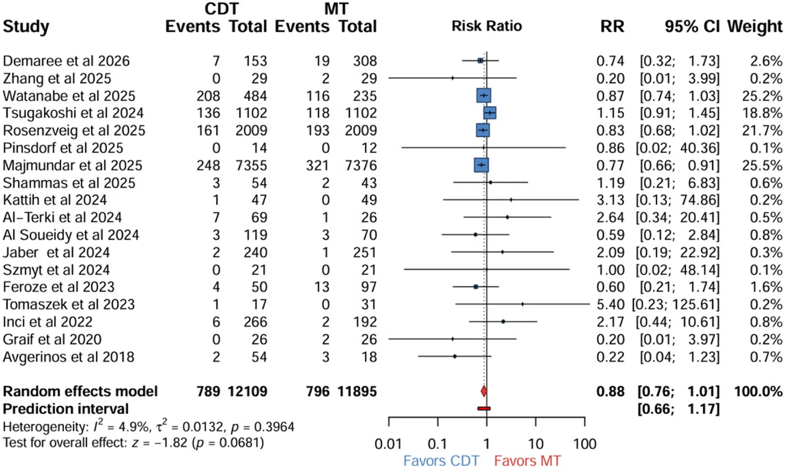
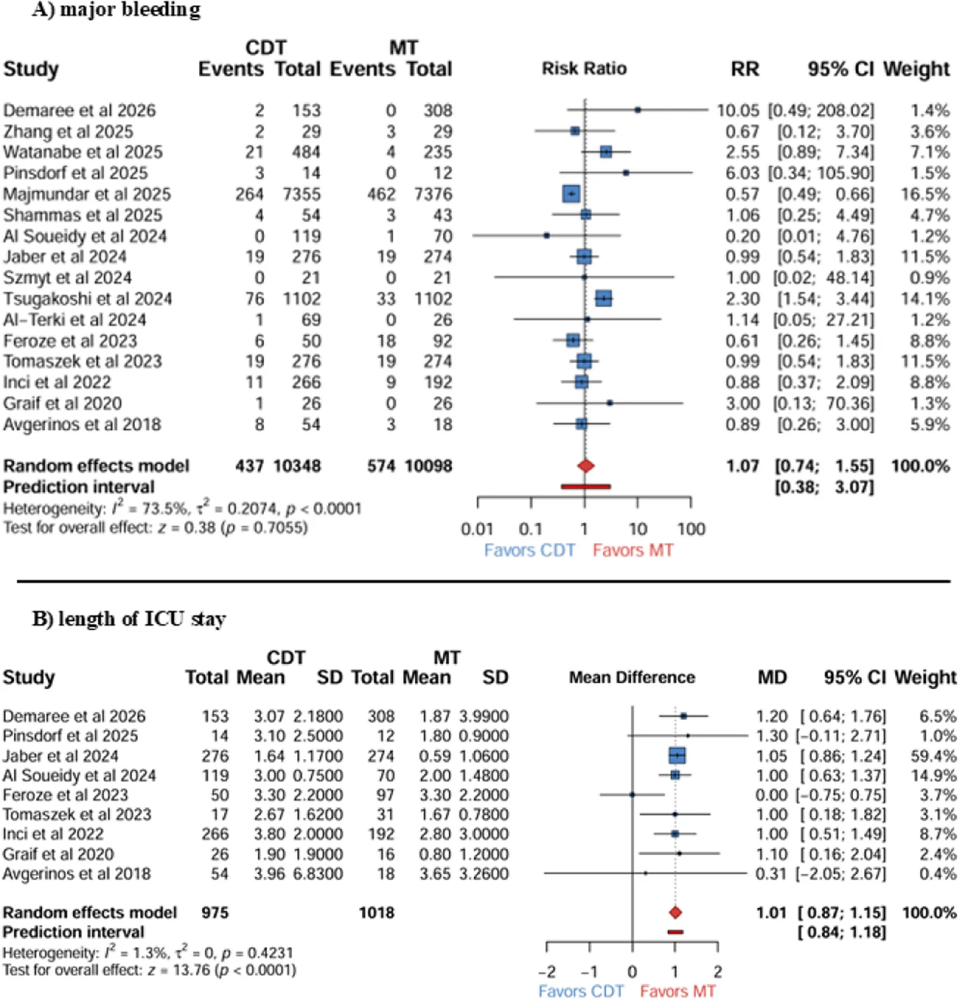
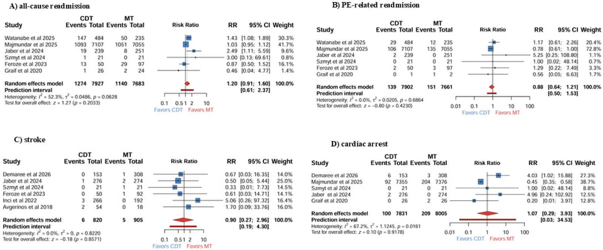

IR Weekly Literature Digest · Full-text analysis
Outcomes with Catheter-Directed Thrombolysis versus Mechanical Thrombectomy for Patients with Intermediate/High Risk Pulmonary Embolism: A Meta-Analysis of 24,090 Patients.
Lung. 2026 Nov 10;204(1):94. doi: 10.1007/s00408-026-00950-7
Read the original articlePubMedOverview
This PROSPERO-registered systematic review and meta-analysis compared catheter-directed thrombolysis (CDT) with mechanical thrombectomy (MT) in adults with intermediate/high-risk pulmonary embolism treated with catheter-based therapy. It included 18 studies and 24,090 patients. Only one study was a randomized trial (PEERLESS) and 17 were retrospective cohorts. Pooled all-cause mortality did not differ significantly (RR 0.88, 95% CI 0.76-1.01, p = 0.068), and major bleeding was similar. CDT was associated with a longer ICU stay. In-hospital mortality was lower with CDT in a subgroup analysis. The authors call this hypothesis-generating because of confounding by indication and the lack of risk-stratified data.
Study design
Systematic review and meta-analysis following PRISMA and the Cochrane Handbook. The protocol was registered in PROSPERO (CRD420261445909). PubMed, Cochrane Central, Scopus and Web of Science were searched from inception to June 2026. Google Scholar, Clinicaltrials.gov and reference lists were also searched. Two reviewers independently screened studies and extracted data, with a third reviewer resolving disagreements. Risk of bias was assessed with RoB 2.0 for the RCT and ROBINS-I for the observational studies. Dichotomous outcomes were pooled as risk ratios and continuous outcomes as mean differences, using a random-effects REML model. Heterogeneity was judged by I2. Leave-one-out and EKOS-only sensitivity analyses were done. Subgroups were defined by follow-up period (in-hospital, 30 days, 1 year, 5 years), by single versus multicenter, and by RCT versus observational design. Random-effects meta-regression covered age, male sex, BMI, smoking and diabetes. Publication bias was tested with Egger and Begg tests. Analyses used R. Of the 18 studies, 1 was an RCT and 17 were retrospective cohorts. Eight were single-center and 10 multicenter, and 13 were conducted in the USA. Weighted mean follow-up was 8.07 months (range 1 day to 60 months).
Patients
Eligible studies enrolled adults (18 years or older) with intermediate- or high-risk PE who underwent catheter-based therapy and compared CDT with MT. Studies with overlapping populations, no comparator, or non-original publication types were excluded. Most studies pooled intermediate and high-risk PE. PEERLESS and Shammas enrolled intermediate-risk PE only, and Watanabe enrolled high-risk PE only. No study reported outcomes stratified by risk category. The two largest studies were administrative or registry datasets: Majmundar (14,731 patients, National Readmission Database), Rosenzveig (4,018) and Tsugakoshi (2,204). Together they dominate the pooled weight. Baseline age (about 55-74 years), sex and comorbidities were broadly similar between arms in the larger studies. Several smaller single-center series showed MT patients to be older, with differences in pulmonary disease. Kattih reported no baseline data. CDT was mostly ultrasound-assisted (EKOS) with alteplase at 0.5-1 mg/h. Urokinase was used in the Chinese study. MT was mostly FlowTriever, with Indigo (Penumbra) in some studies and, in older series, pigtail or Cragg-McNamara catheters. Several large studies did not report devices, drugs or doses.
Intervention and comparator
CDT (multi-side-hole or ultrasound-assisted catheters, mostly EKOS; alteplase typically 1 mg/h per catheter for 6-24 h, with a total dose of about 12-24 mg in some series) versus MT (aspiration or large-bore mechanical thrombectomy, mostly FlowTriever/Inari, with Penumbra or Indigo in some studies). MT is generally performed without thrombolytics. Device, drug and dose details are in Table S2 and were incompletely reported.
Results
| All-cause mortality (primary; all 18 studies, 24,004 patients) | RR 0.88, 95% CI 0.76-1.01, p = 0.068, I2 = 4.9%. The prediction interval was 0.66-1.17. The result was not significant. |
|---|---|
| Mortality sensitivity analysis restricted to EKOS-CDT studies | RR 0.85, 95% CI 0.47-1.53, p = 0.58, I2 = 0.0%. |
| Mortality subgroup by follow-up period | In-hospital mortality was lower with CDT (RR 0.80, 95% CI 0.70-0.91, I2 = 0.0%). There was no significant difference at 30 days, 1 year or 5 years. The test for subgroup difference gave Pinteraction = 0.003. |
| Mortality subgroups by design and center number | Observational versus RCT, Pinteraction = 0.61. Single-center versus multicenter, Pinteraction = 0.86. |
| Meta-regression and publication bias for mortality | No association with age (p = 0.53), male sex (p = 0.34), BMI (p = 0.39), smoking (p = 0.48) or diabetes (p = 0.69). Egger p = 0.45 and Begg p = 0.52. |
| Major bleeding | RR 1.07, 95% CI 0.74-1.55, p = 0.705, I2 = 73.5%, prediction interval 0.38-3.07. Heterogeneity fell after excluding Majmundar 2025 (RR 1.23, 95% CI 0.86-1.76, I2 = 29.9%) or Tsugakoshi 2024 (RR 0.89, 95% CI 0.64-1.22, I2 = 33.6%). |
| Length of ICU stay | CDT was associated with a longer stay: MD 1.01 days, 95% CI 0.87-1.15, p < 0.0001, I2 = 1.3%, prediction interval 0.84-1.18. The numbers are as reported. The CI reads like a ratio centered on 1 rather than a day difference, which raises a question about the effect measure used. |
| Other secondary outcomes | Length of hospital stay, blood transfusion, all-cause readmission, PE-related readmission, stroke and cardiac arrest showed no significant difference between CDT and MT. Exact estimates are in Figs. 4 and 5 and are not given in the text. |
Key figures


| Study ID | Study design | Centers | Country | Sample size | CDT Device | CDT modality | CDT drug | MT | PE patients | Diagnosis of PE | FU, months |
|---|---|---|---|---|---|---|---|---|---|---|---|
| Demaree et al. 2026 [15] | Observational study | Single center | USA | 461 | either the Unifuse (Angiodynamics)or Cragg-McNamara (Medtronic) conventional infusion catheters | Ultrasound | rtPA at 0.5–1 mg/h | A balloon-tippedor pigtail catheter. | Intermediate and high-risk PE | CT angiography or V/Q scan | 1 month |
| Shammas et al. 2025 [17] | Observational study | Multicenter | USA | 97 | The EKOS EndovascularSystem (Boston Scientific) | Ultrasound | rtPA at 0.5–1 mg/h | The FlowTriever (Inari Medical). | Intermediate risk PE | CT angiography | 1 month |
| Zhang et al. 2025 [18] | Observational study | Single center | China | 58 | Using 1 or 2 multiple-sidedhole infusion catheters (Multi-Sideport; Cook, Bloomington, IN, USA) | Ultrasound | Urokinase at a dosage of 200,000–800,000 IU/day. | The Indigo Catheter (8 Fr) (Penumbra) | Intermediate and high-risk PE | CT angiography and D-dimer | 24 months |
| Watanabe et al. 2025 [19] | Observational study | Multicenter | USA | 719 | - | Ultrasound | - | - | High-risk PE | CT angiography | 12 months |
| Rosenzveig et al. 2025 [16] | Observational study | Multicenter | USA | 4018 | - | - | - | - | Intermediate and high-risk PE | CT angiography | 12 months |
| Pinsdorf et al. 2025 [28] | Observational study | Multicenter | Germany | 26 | The EKOS EndovascularSystem (Boston Scientific) | Ultrasound | Alteplase at a rate of1 mg/h for 6–12 h, alongside UFHanticoagulation maintaining a PTT of 50–70 s. | The FlowTriever System (InariMedical) | Intermediate and high-risk PE | CT angiography | 3 months |
| Majmundar et al. 2025 [13] | Observational study | Multicenter | USA | 14,731 | - | - | - | - | Intermediate and high-risk PE | CT angiography | 9 months |
| Kattih et al. 2024 [32] | Observational study | Single center | USA | 123 | - | - | - | - | Intermediate and high-risk PE | Clinical diagnosis triggering PERT activation | 12 months |
| Al-Terki et al. 2024 [35] | Observational study | Multicenter | Germany | 95 | The EKOS EndovascularSystem (Boston Scientific) | Ultrasound | 1 mg/h alteplasefor 6 h in parallel with an anticoagulation with UFHwith a PTT of 60–80 s. | The LBT system (Inari Medical) | Intermediate and high-risk PE | Multislice computed tomography (MSCT) of lungs | 1 day |
| Al Soueidy et al. 2024 [25] | Observational study | Single center | USA | 189 | The EKOS EndovascularSystem (Boston Scientific) | Ultrasound | tPA within the pulmonary arteries, typically 1 mg/hour percatheter, for a total dose ranging from 12 to 24 mg. | Penumbra | Intermediate and high-risk PE | CTPA or echocardiogram | 2–3 days post-procedure |
| Jaber et al. 2024 [12] | RCT | Multicenter | USA | 550 | The EKOS EndovascularSystem (Boston Scientific) | Ultrasound | - | FlowTriever System (Inari Medical, Irvine, CA). | Intermediate risk PE | CTPA or echocardiogram | 1 month |
| Szmyt et al. 202433 | Observational study | Single center | Poland | 42 | - | - | Alteplase at a dose of 1 mg/h/catheter for 8 h with initial bolts of 2 mg/catheter | - | Intermediate and high-risk PE | CTPA or troponin levels or TTE | 1.5 days |
| Tsugakoshi et al. 2024 [34] | Observational study | Multicenter | 19 countries mainly USA | 2204 | - | - | - | - | Intermediate and high-risk PE | CT angiography | 60 months |
| Feroze et al. 2023 [27] | Observational study | Multicenter | USA | 147 | The EKOS EndovascularSystem (Boston Scientific) | Ultrasound | - | The Inari FlowTriever thrombectomy catheter (InariMedical) | Intermediate and high-risk PE | CT angiography | 12 months |
| Tomaszek et al. 2023 [30] | Observational study | Single center | USA | 48 | - | - | tPA drip rate of 0.5–1 mg/h | The FlowTriever System (Inari Medical, Irvine, CA) | Intermediate and high-risk PE | CT angiography | 1 day |
| Inci et al. 2022 [31] | Observational study | Multicenter | USA | 458 | The Ekosonic(Boston Scientific), Unifuse (Angiodynamics), or Cragg-McNamarra(Medtronic) catheters | Fluoroscopy | rTPA | The FlowTriever System (Inari Medical, Irvine, CA) | Intermediate and high-risk PE | CT or direct angiography | 1 month |
| Graif et al. 2020 [29] | Observational study | Single center | USA | 52 | Cook Medical, Bloomington, Indiana), UniFusemultiple side-hole infusion catheters (AngioDynamics, Inc,Latham, New York), andEkoSonic Endovascular Systemcatheters (Boston Scientific, Marlborough, Massachusetts). | Ultrasound | tPA | The FlowTriever (Inari Medical, Irvine, California) | Intermediate and high-risk PE | CT angiography | 1 month |
| Avgerinos et al. 2018 [26] | Observational study | Single center | USA | 72 | The Eko-Sonic catheter (EKOS Corp, Bothell, Wash) | Ultrasound | 2 to 4 mg of rTPA is given when needed, followed by lysis initiation at a rate of 0.5 to 1.0 mg/h. | 5 F Cragg-McNamara [Boston Scientific, Marlborough,Mass] or UniFuse [AngioDynamics, Latham, NY] | Intermediate and high-risk PE | CT angiography | --- |

Safety
Safety was assessed through pooled major bleeding, transfusion, stroke and cardiac arrest, with no between-group difference on any. Major bleeding had substantial heterogeneity (I2 = 73.5%), and the prediction interval of 0.38-3.07 is very wide. Bleeding definitions varied across studies and were not harmonized. No grading system for adverse events is reported. Intracranial hemorrhage, procedural complications, device-related events and pulmonary vascular injury were not analyzed separately.
Strengths
- Prospectively registered protocol with a comprehensive search across four databases and grey literature
- Largest comparative dataset to date (24,090 patients), including the PEERLESS RCT and recent observational studies
- Dual independent screening and extraction, with formal risk-of-bias tools (RoB 2.0 and ROBINS-I)
- Low heterogeneity for mortality (I2 4.9%), with prediction intervals, leave-one-out analysis, EKOS sensitivity analysis, subgroup analyses, meta-regression and publication-bias tests
- Authors acknowledge the key limits and label the mortality signal hypothesis-generating
Limitations
- Evidence is almost entirely retrospective (17 of 18 studies, with one RCT). Confounding by indication is likely, because MT may be chosen for sicker patients or those with contraindications to lytics, and CDT for others. Pooled estimates were unadjusted or used study-level data, and no patient-level adjustment was possible. Subgroup analysis and meta-regression cannot fix this.
- Three administrative or registry datasets (Majmundar, Rosenzveig, Tsugakoshi) account for most of the 24,090 patients and dominate the pooled weight. Majmundar uses administrative coding with possible misclassification of PE risk, bleeding and procedure type. Only a few studies are prospective or have granular clinical detail. Overlap between registries or databases is possible despite the exclusion criteria.
- Intermediate and high-risk PE were pooled, and no study reported stratified results. Baseline mortality and the expected effect of MT versus CDT differ by stratum, so the pooled estimate may be uninterpretable. The in-hospital mortality signal may reflect hemodynamically unstable patients or patients on VA-ECMO being steered to MT. These data were not extracted.
- Interventions were heterogeneous: different CDT drugs, doses, durations and devices, and different MT platforms. Many studies did not report these details, so no dose- or device-stratified analyses were possible. Technology and operator experience have also changed over time.
- The primary mortality result was not significant (CI upper bound 1.01). The headline in-hospital finding is a post hoc subgroup result. The subgroup analysis was based on follow-up period, and the studies in each subgroup are not independent of the overall set, so the Pinteraction of 0.003 should be treated cautiously. Follow-up periods were inconsistent, from 1 day to 60 months.
- Major bleeding had high heterogeneity (I2 = 73.5%) and a prediction interval of 0.38-3.07, so safety equivalence cannot be concluded. Definitions of bleeding were not harmonized. The ICU-stay result is odd: an MD of 1.01 days with CI 0.87-1.15 and p < 0.0001 looks like a ratio-scale estimate, and the discrepancy is not explained. ICU stay is also a practice-pattern outcome that depends on protocol, because CDT mandates monitoring during infusion.
- Key surrogate and functional outcomes were not analyzed: RV/LV ratio, PA pressure, clinical deterioration or bailout, long-term pulmonary hypertension, quality of life and cost. Procedure time is mentioned in the Discussion but not in the Methods or Results. The mortality outcome mixes short- and long-term follow-up. Only the PEERLESS trial used a hierarchical composite, which this analysis could not replicate.
- The reported mortality studies numbered 18 but the pooled sample was 24,004, which differs from 24,090 and is not explained. The 2026 AHA/ACC guideline and searches to June 2026 are cited in the paper, but the paper does not discuss how these were handled. The weighted mean follow-up of 8.07 months is a heterogeneous summary.
In context
The authors place their findings against PEERLESS (the only RCT here), which favored large-bore MT on a hierarchical composite with less clinical deterioration or bailout and lower post-procedural ICU use, while mortality and major bleeding did not differ. In contrast, the Majmundar National Readmission Database study reported lower in-hospital mortality and major bleeding with CDT, but is vulnerable to coding and selection bias. A previous meta-analysis by Afridi et al. also found broadly comparable outcomes with possibly shorter hospital stay with MT. Demaree reported no clear mortality difference but lower ICU use with MT. This analysis adds the more recent studies not included in earlier syntheses. It confirms no clear difference in mortality or bleeding. Unlike PEERLESS, it finds a longer ICU stay with CDT, consistent in direction with the trial. It also finds no difference in readmission, which PEERLESS had reported to be higher after CDT. Guidelines (2019 ESC and the 2026 AHA/ACC) do not prefer CDT over MT because direct comparative evidence is limited.
Implications for practice
There is no convincing evidence from this analysis that CDT or MT is superior for mortality or major bleeding in intermediate/high-risk PE. The mortality point estimate (RR 0.88) leans toward CDT, but the CI includes 1 and the data are largely retrospective and confounded. The lower in-hospital mortality with CDT (RR 0.80) should not drive practice: it is a post hoc subgroup result, probably reflecting selection of sicker patients for MT, and it is not supported by the sole RCT. This meta-analysis also cannot answer what PEERLESS asked, which is whether MT reduces clinical deterioration and ICU use, or whether it improves early hemodynamics. A longer ICU stay with CDT is plausible and relevant for resource planning, but the pooled estimate is oddly reported and mixes practice patterns. Choice of therapy should remain individualized, based on bleeding risk and contraindications to lytics, hemodynamic urgency, device availability, local expertise and ICU capacity, as the authors conclude. Confidence in the neutral findings is low to moderate: the evidence is observational and dominated by large administrative databases. Confidence in the in-hospital mortality signal and in bleeding equivalence is low. Randomized trials stratified by risk category with standardized CDT regimens and hemodynamic and functional endpoints are needed.